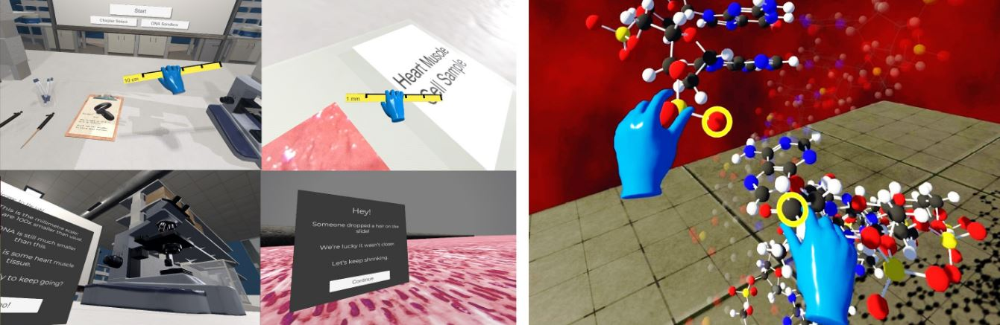
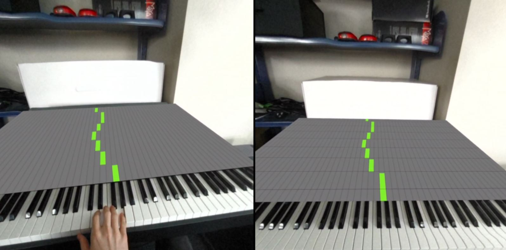

Selected Publications & Projects
A selection of my research which I am especially interested in.
For a complete publications list and citation counts, see the Google Scholar feed.
2026 (in press)

Investigating Personalised Avatars with Face Tracking in Social VR
S. E. R. Thompson, D. Lange-Nawka, B. C. Wünsche
CHI 2026 Extended Abstracts (Poster), ACM CHI Conference on Human Factors in Computing Systems
Explores how personalised, face-tracked avatars shape identity expression and social presence in multi-user VR.
Towards Embodied Identities: Investigating Personalised Avatars with Face Tracking in Social VR
S. E. R. Thompson, D. Lange-Nawka, B. C. Wünsche
SAXR Workshop, ACM CHI 2026
Positions face-tracked personalised avatars as a lens on embodied identity in social XR, outlining open research questions for future work.
2025

Now You're Thinking with Portals: Investigating Episodic Memory and Locomotion with Redirected Walking in Impossible Spaces
S. E. R. Thompson, D. Lange-Nawka, A. Habedank, et al.
Virtual Worlds 4 (3), 39
Demonstrates a redirected walking system for non-Euclidean museum spaces and studies how episodic memory adapts to physically impossible layouts.
Read Paper2023

Hands-on DNA: Exploring the Impact of Virtual Reality on Teaching DNA Structure
S. Dunn, B. C. Wünsche, J. R. Allison, et al.
ACM VRST 2023

Relationship between Motivational Strategies and Gamification User Types in VR Movement Games
S. E. R. Thompson, B. C. Wünsche, D. Lange-Nawka
IVCNZ 2023 · Image and Vision Computing New Zealand
Investigates if personalised gamification increases movitivation to use an application that could be utilised for stroke rehabilitation.
Read Paper
Auditory temporal hints in AR piano tutoring
Lange-Nawka, D. Wünsche, B. C., Thompson, S. E. R.
IVCNZ 2023